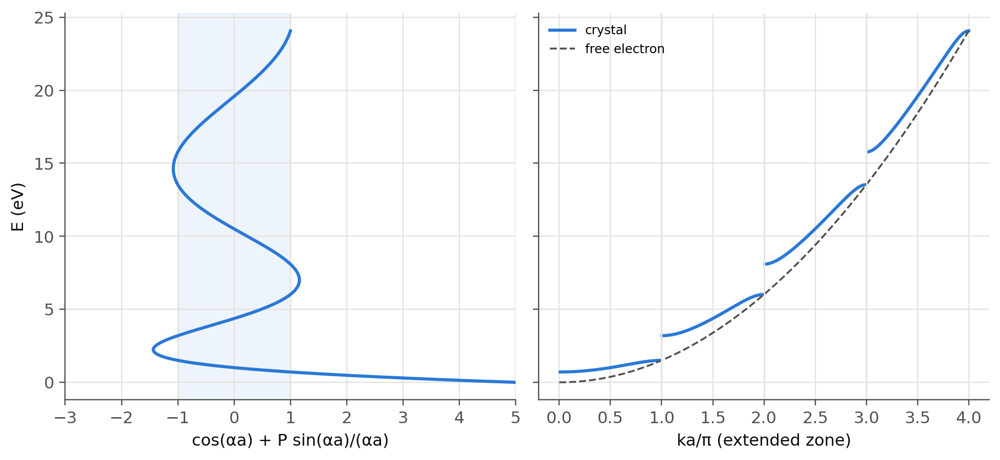
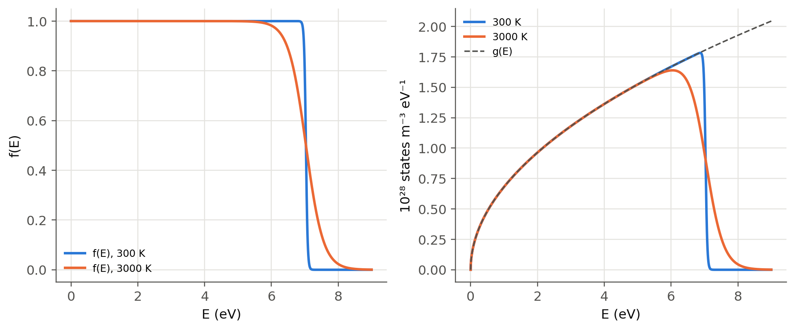
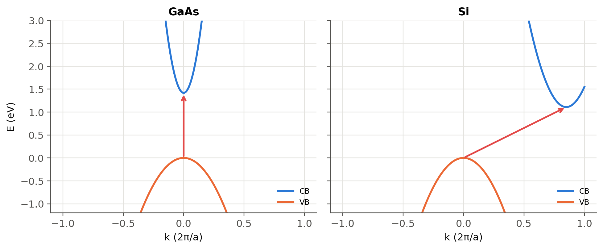

1 Energy bands, holes and E–k diagrams
 Run this chapter’s code in Google Colab (no installation).
Run this chapter’s code in Google Colab (no installation).
Slides 3–9 (bands in metals and semiconductors, density of states, Fermi–Dirac function, holes) and 33–39 (periodic potential, Bloch waves, E–k diagrams, direct and indirect gaps, phonons).
1.1 Key relations
When \(N\) atoms come together, each atomic level splits into \(N\) closely spaced levels: an energy band (slide 3). In a metal the outermost band is only partly filled. In a semiconductor at 0 K the valence band (VB) is full, the conduction band (CB) is empty, and they are separated by the bandgap \(E_g\) (slide 7).
An electron in a crystal of size \(L\) can only take standing-wave modes, \(kL=n\pi\) (slide 4). Counting them gives the density of states and, with the Fermi–Dirac occupation, the electron distribution (slides 5–6):
\[ g(E)=\frac{8\sqrt2\,\pi\, m^{*3/2}}{h^3}\,(E-E_c)^{1/2},\qquad f(E)=\frac{1}{1+\exp\!\left[(E-E_F)/k_BT\right]},\qquad n=\int g(E)f(E)\,dE . \]
At 0 K all states up to the Fermi energy \(E_{F0}\) are full. For a metal with free-electron concentration \(n\), \(E_{F0}=\dfrac{h^2}{8m_e}\left(\dfrac{3n}{\pi}\right)^{2/3}\).
In the periodic potential \(V(x)=V(x+ma)\) of the crystal the electron wavefunction is a Bloch wave \(\psi_k(x)=U_k(x)e^{jkx}\) (slide 34). \(\hbar k\) is the crystal momentum: an external force changes it as \(F=d(\hbar k)/dt\) (slide 35). Plotting the allowed energies against \(k\) gives the E–k diagram (slides 37–38). A photon can only be emitted efficiently if the CB minimum sits directly above the VB maximum (direct gap: GaAs, InP, GaN). In an indirect semiconductor (Si, Ge) a phonon must supply the missing momentum.
1.2 Where bands come from: the Kronig–Penney model
The simplest periodic potential is a row of thin barriers of strength \(P\) spaced by \(a\). Bloch’s theorem then gives a single equation for the allowed energies:
\[ \cos(ka)=\cos(\alpha a)+P\,\frac{\sin(\alpha a)}{\alpha a},\qquad \alpha=\frac{\sqrt{2m_eE}}{\hbar}. \]
The right-hand side can exceed 1 in magnitude, and then no real \(k\) exists: that energy is a gap. Increase \(P\) in the panel and watch the free-electron parabola break into bands, with gaps opening at \(ka=\pm\pi\) (the edge of the Brillouin zone).
Show the Python
a, P = 0.5e-9, 4.0
x = np.linspace(1e-4, 4*np.pi, 8000) # alpha*a
E = (sl.hbar*x/a)**2/(2*sl.me)/sl.qe
rhs = np.cos(x) + P*np.sin(x)/x
ok = np.abs(rhs) <= 1
ka = np.where(ok, np.arccos(np.clip(rhs, -1, 1)), np.nan)
band = np.floor(x/np.pi) # band index -> extended-zone unfolding
k_ext = np.where(band % 2 == 0, ka + band*np.pi, (band + 1)*np.pi - ka)
fig, ax = plt.subplots(1, 2, figsize=(9, 4.2), sharey=True)
ax[0].plot(rhs, E); ax[0].axvspan(-1, 1, color=sl.PALETTE[0], alpha=0.08)
ax[0].set(xlabel="cos(αa) + P sin(αa)/(αa)", ylabel="E (eV)", xlim=(-3, 5))
ax[1].plot(k_ext/np.pi, E, label="crystal"); ax[1].plot(x/np.pi, E, ls="--", color=sl.INK2, lw=1.2, label="free electron")
for m in (1, 2, 3): ax[1].axvline(m, color=sl.GRID, lw=1)
ax[1].set(xlabel="ka/π (extended zone)"); ax[1].legend(fontsize=8)
plt.tight_layout(); plt.show()
1.3 Metals: the Fermi energy
Slides 3–6 picture a metal as a partly filled band. With one free electron per atom the free-electron formula already gives the right order of magnitude for \(E_{F0}\), and the average electron energy at 0 K is \(\tfrac35E_{F0}\):
Show the Python
metals = {"Na": 2.65e28, "Al": 18.1e28, "Cu": 8.47e28, "Ag": 5.86e28, "Au": 5.90e28}
EF = {m: sl.h**2/(8*sl.me)*(3*n/np.pi)**(2/3)/sl.qe for m, n in metals.items()}
pd.DataFrame({"n (10^28 m^-3)": {m: n/1e28 for m, n in metals.items()},
"E_F0 (eV)": EF, "mean energy 3/5 E_F0 (eV)": {m: 0.6*e for m, e in EF.items()},
"Fermi speed (10^6 m/s)": {m: np.sqrt(2*e*sl.qe/sl.me)/1e6 for m, e in EF.items()}}).round(2)| n (10^28 m^-3) | E_F0 (eV) | mean energy 3/5 E_F0 (eV) | Fermi speed (10^6 m/s) | |
|---|---|---|---|---|
| Na | 2.65 | 3.24 | 1.94 | 1.07 |
| Al | 18.10 | 11.67 | 7.00 | 2.03 |
| Cu | 8.47 | 7.03 | 4.22 | 1.57 |
| Ag | 5.86 | 5.50 | 3.30 | 1.39 |
| Au | 5.90 | 5.53 | 3.32 | 1.39 |
Show the Python
E = np.linspace(0, 9, 2000)
g = sl.dos_3d(E, 1.0)
fig, ax = plt.subplots(1, 2, figsize=(9, 3.8))
for T, c in ((300, sl.PALETTE[0]), (3000, sl.PALETTE[1])):
ax[0].plot(E, sl.fermi_dirac(E, EF["Cu"], T), color=c, label=f"f(E), {T} K")
ax[1].plot(E, g*sl.fermi_dirac(E, EF["Cu"], T)/1e28, color=c, label=f"{T} K")
ax[1].plot(E, g/1e28, ls="--", color=sl.INK2, lw=1.2, label="g(E)")
ax[0].set(xlabel="E (eV)", ylabel="f(E)"); ax[0].legend(fontsize=8)
ax[1].set(xlabel="E (eV)", ylabel="10²⁸ states m⁻³ eV⁻¹"); ax[1].legend(fontsize=8)
plt.tight_layout(); plt.show()
1.4 Holes (slides 8–9)
A photon with \(h\nu>E_g\) breaks a bond and creates an electron–hole pair (EHP). The empty bond, the hole, moves because neighbouring valence electrons tunnel into it. It behaves like a positive particle with its own effective mass \(m_h^*\). When a wandering CB electron meets a hole they recombine: in a direct-gap material the energy is released as a photon. This is the LED.
The photogeneration threshold is \(\lambda_g=hc/E_g\):
Show the Python
pd.DataFrame({m: {"E_g (eV)": p["Eg"], "λ_g (nm)": sl.wavelength_from_eV(p["Eg"])*1e9,
"gap": "direct" if p["direct"] else "indirect"} for m, p in sl.MATERIALS.items()}).T| E_g (eV) | λ_g (nm) | gap | |
|---|---|---|---|
| Ge | 0.66 | 1878.548461 | indirect |
| Si | 1.11 | 1116.974761 | indirect |
| InP | 1.35 | 918.40147 | direct |
| GaAs | 1.42 | 873.128158 | direct |
| AlAs | 2.17 | 571.355753 | indirect |
1.5 Direct and indirect gaps, phonons (slides 37–39)
Near a band edge the E–k diagram is a parabola, \(E=E_c+\hbar^2(k-k_0)^2/2m_e^*\). The figure contrasts GaAs (CB minimum at \(k=0\)) with Si (CB minimum near the zone edge along [100], \(k_0\approx0.85\cdot2\pi/a\)).
Show the Python
k = np.linspace(-1, 1, 400) # in units of 2π/a
fig, ax = plt.subplots(1, 2, figsize=(9, 3.8), sharey=True)
for a_, (name, k0, Eg, mc) in zip(ax, (("GaAs", 0.0, 1.42, 0.067), ("Si", 0.85, 1.11, 0.26))):
a_m = sl.MATERIALS[name]["a"]
kk = k*2*np.pi/a_m
a_.plot(k, Eg + (sl.hbar*(kk - k0*2*np.pi/a_m))**2/(2*mc*sl.me)/sl.qe, label="CB")
a_.plot(k, -(sl.hbar*kk)**2/(2*0.5*sl.me)/sl.qe, label="VB")
a_.annotate("", xy=(k0, Eg), xytext=(0, 0), arrowprops=dict(arrowstyle="->", color=sl.PALETTE[7], lw=1.8))
a_.set(title=name, xlabel="k (2π/a)", ylim=(-1.2, 3)); a_.legend(fontsize=8, loc="lower right")
ax[0].set_ylabel("E (eV)"); plt.tight_layout(); plt.show()
k_photon = 2*np.pi/sl.wavelength_from_eV(1.11)
print(f"photon wavevector at Eg(Si): {k_photon:.2e} m^-1; zone edge π/a = {np.pi/sl.MATERIALS['Si']['a']:.2e} m^-1")
print(f"ratio: {k_photon/(np.pi/sl.MATERIALS['Si']['a']):.1e} -> photons carry almost no crystal momentum")
v_s = 9000 # longitudinal sound speed in Si (m/s)
print(f"acoustic phonon at k0: E = ħ v_s k0 ≈ {sl.hbar*v_s*0.85*2*np.pi/sl.MATERIALS['Si']['a']/sl.qe*1e3:.0f} meV (linear estimate; real Si phonons at X: 19–57 meV)")
photon wavevector at Eg(Si): 5.63e+06 m^-1; zone edge π/a = 5.78e+09 m^-1
ratio: 9.7e-04 -> photons carry almost no crystal momentum
acoustic phonon at k0: E = ħ v_s k0 ≈ 58 meV (linear estimate; real Si phonons at X: 19–57 meV)A photon cannot supply the momentum \(\hbar k_0\), but a lattice vibration (phonon, slide 39) can: it has a large \(k\) and a small energy (tens of meV). Three-body processes are slow, so radiative recombination in Si takes milliseconds, while non-radiative recombination through defects (slide 38c) takes microseconds. Si therefore cannot be used for LEDs.
TipGoing deeper
- Effective mass from curvature. \(1/m^*=\hbar^{-2}\,d^2E/dk^2\). Compute it at the bottom of the first two Kronig–Penney bands. Why is it negative at the top of a band? This is the origin of the hole.
- Tight binding. For \(N\) coupled atoms the levels spread over a band of width \(4t\) (hopping \(t\)). Diagonalise an \(N\times N\) tridiagonal matrix with
numpy.linalg.eigvalshand watch the levels fill a band as \(N\) grows (slide 3b). - Real band structures. Use the empirical pseudopotential method (a 30-line Python script with the Cohen–Bergstresser form factors) to compute the E–k diagram of Si and GaAs along L–Γ–X and find \(E_g\) and \(k_0\).
- Strained and alloyed Ge becomes a direct-gap semiconductor (GeSn alloys): a route to light sources on silicon.
NoteComplements
- S. O. Kasap, Optoelectronics and Photonics, ch. 3; Principles of Electronic Materials and Devices, ch. 4–5.
- C. Kittel, Introduction to Solid State Physics: chapters on free-electron gas and energy bands (Kronig–Penney).
- M. L. Cohen and J. R. Chelikowsky, Electronic Structure and Optical Properties of Semiconductors (pseudopotentials).
1.6 Try it yourself
- In the live panel, at which \(P\) does the first gap reach 1.1 eV (the Si gap) for \(a=0.543\) nm? Is the model realistic?
- Show that the number of states in one Kronig–Penney band equals the number of unit cells (count \(k=2\pi m/Na\)).
- Compute \(E_{F0}\) for Mg (two free electrons per atom, \(n_\text{atoms}=4.3\times10^{28}\) m\(^{-3}\)).
- How large must the phonon energy be to assist an indirect transition in Ge, where the CB minimum is at the L point, \(k_0=\sqrt3\,\pi/a\)? Use a sound speed of 5000 m/s.